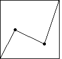
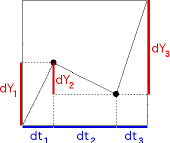
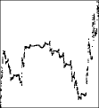
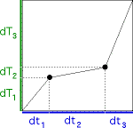
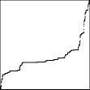
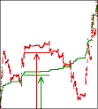
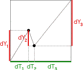
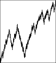

| As our first example, we take the generator with turning points
(1/4, 1/2) and (3/4, 1/4). |
|  |
|  |
First, we compute the price and clock time increments,
and observe this is not a unifractal generator. |
|  |
Here is the price and clock time graph,
along with the graph of first differences. This is just an illustration, not part of
the method of graphing price vs trading time. |
|  |
Next, we find the trading time generator. |
|  |
Here is the trading time and clock time graph,
along with the graph of first differences. This is just an illustration, not part of
the method of graphing price vs trading time. |
|  |
Here we relate trading time to price volatility.
This is just an illustration, not part of the method of graphing price vs trading time. |
|  |
Now we compute the price and trading time generator. |
|  |
Finally, here is the price and trading time graph,
along with the graph of first differences. |
|
| Recall independent increments and short tails are the two principal
characteristics of Brownian motion that do not agree with
observations of stock market behavior. |
| Fractional Brownian motion
has dependent increments but also short tails; Levy flights
have long tails but independent increments. |
| Visual inspection of the
cartoon difference graphs
suggests that the cartoon models have
both dependent increments and long tails. |
| The conversion from clock time to trading time treats these features in two
different ways: dependence remains in the price record, while
the long tails are absorbed into the multifractal nature of trading time. |